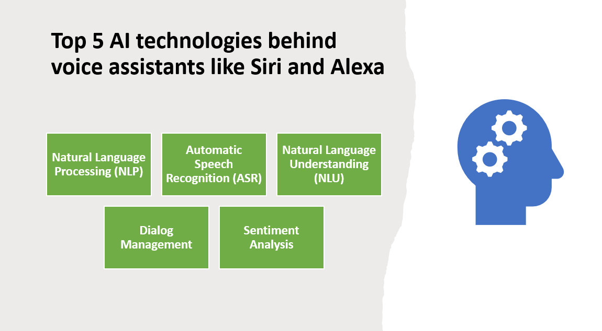

Introduction
Voice assistants have revolutionized the way we interact with technology, enabling us to perform tasks and access information through natural language voice commands. Behind the scenes, these voice assistants rely on advanced AI technologies to understand and respond to user queries. In this blog post, we will explore the top seven AI technologies that power voice assistants like Siri and Alexa, driving their impressive capabilities and enhancing user experiences.
Here Are Our Top 7 AI technologies behind voice assistants like Siri and Alexa:
1: Natural Language Processing (NLP)
Natural Language Processing (NLP) is a crucial AI technology that plays a significant role in the development of voice assistants and other language-based applications. NLP focuses on enabling computers to understand and interpret human language in a way that is similar to how humans communicate. It involves a range of techniques and algorithms that allow machines to process, analyze, and generate natural language text or speech.
Overview and Importance
NLP holds great significance due to its ability to bridge the divide between human communication and machine comprehension. By harnessing NLP, voice assistants can interpret user inquiries, extract pertinent information, and generate suitable responses. NLP empowers voice assistants to grasp the intricacies of language, encompassing syntax, semantics, and context, which is pivotal in providing precise and meaningful interactions.
Key Components and Techniques
Speech Recognition
Speech recognition, also known as automatic speech recognition (ASR), is a component of NLP that converts spoken language into written text. It involves analyzing audio signals and transcribing them into textual representations that can be processed by the voice assistant.
Intent Recognition
Intent recognition is a core component of NLP that aims to understand the intention behind a user's query or command. It involves identifying the user's intent or purpose, which helps the voice assistant determine the appropriate action or response.
Entity extraction involves identifying and extracting specific pieces of information from user inputs. Entities can include names, dates, locations, or any other relevant data that needs to be extracted and understood by the voice assistant to provide accurate responses.
Techniques used in NLP include:
Machine Learning: Machine learning algorithms are used in NLP to train models on large datasets, enabling systems to learn patterns, identify context, and make predictions based on the input data. Supervised, unsupervised, and reinforcement learning are common approaches used in NLP.
Deep Learning: Deep learning, a subset of machine learning, focuses on training artificial neural networks with multiple layers to extract intricate patterns and representations from text or speech data. Deep learning models, such as recurrent neural networks (RNNs) and transformers, have achieved significant advancements in various NLP tasks.
Industry Applications and Advantages
NLP has widespread applications in the development of voice assistants, benefiting industries in various ways:
NLP enables voice assistants to understand user queries and retrieve relevant information from vast databases or the internet. Users can perform voice-based searches, ask questions, and receive accurate and timely responses, enhancing convenience and efficiency.
Task Automation
NLP helps voice assistants automate tasks by understanding user instructions and performing actions accordingly. It can facilitate tasks like setting reminders, sending messages, scheduling appointments, or controlling smart home devices, making voice assistants valuable personal assistants.
Language Translation and Transcription
NLP is used in language translation applications to convert spoken or written text from one language to another. It also plays a role in transcription services, converting spoken audio into written text for various purposes like documentation or accessibility.
Advantages of NLP in voice assistants include:
Enhanced User Experiences: NLP enables more natural and conversational interactions with voice assistants, making them more intuitive and user-friendly. Users can communicate using their own language and style, leading to improved satisfaction and engagement.
Improved Accuracy and Context Understanding: NLP techniques enhance the accuracy of voice assistants by considering contextual information, understanding nuances, and accurately interpreting user queries. This leads to more precise and relevant responses.
Increased Efficiency and Productivity: By automating tasks and providing quick access to information, NLP-powered voice assistants can help users save time, increase productivity, and simplify complex processes.
In conclusion, NLP is a critical AI technology that enables voice assistants to understand and interpret human language. With components like speech recognition, intent recognition, and entity extraction, and techniques such as machine learning and deep learning, NLP facilitates voice search, information retrieval, task automation, and more. NLP enhances user experiences, improves accuracy, and makes voice assistants more intuitive, offering significant advantages in various industries.
2: Automatic Speech Recognition (ASR)
Automatic Speech Recognition (ASR) is a technology that converts spoken language into written text. ASR plays a crucial role in numerous applications, including voice assistants, transcription services, call center automation, and more. It enables machines to understand and process spoken language, opening up opportunities for hands-free interactions, accessibility, and efficient data analysis.
Overview and Importance
ASR (Automatic Speech Recognition) plays a crucial role in bridging the divide between spoken language and written text. Its capability to accurately transcribe spoken words facilitates communication between humans and machines, opening up a multitude of applications reliant on voice inputs. ASR has revolutionized industries by enhancing the accessibility and efficiency of voice-based interactions.
Key Components and Techniques
Acoustic Modeling
Acoustic modeling is a key component of ASR that involves analyzing audio signals and mapping them to phonetic representations. It captures the relationship between spoken sounds and the corresponding text, allowing ASR systems to recognize and transcribe speech accurately.
Language Modeling
Language modeling focuses on understanding the structure, grammar, and vocabulary of a specific language. It helps ASR systems generate the most probable word sequences given the acoustic input. Language models can be trained using statistical techniques or more advanced approaches like neural networks.
Decoding
Decoding is the process of determining the most likely sequence of words that corresponds to a given audio input. It involves combining acoustic and language models to find the optimal transcription based on the input signal. Various algorithms, such as Hidden Markov Models (HMMs) or Connectionist Temporal Classification (CTC), are used for decoding in ASR systems.
Techniques used in ASR include:
Hidden Markov Models (HMMs): HMMs are statistical models widely used in ASR. They represent the probabilistic relationship between hidden states (phonemes or words) and observed acoustic features. HMM-based ASR systems align audio features with phonetic units to generate transcriptions.
Deep Learning: Deep learning techniques, particularly recurrent neural networks (RNNs) and convolutional neural networks (CNNs), have revolutionized ASR. Deep learning models can capture complex patterns in audio signals and perform end-to-end speech recognition without explicit feature engineering.
Industry Applications and Advantages
ASR has diverse applications across industries, offering numerous advantages:
Voice Assistants
ASR forms the foundation of voice assistants, enabling users to interact with devices, perform tasks, and retrieve information through spoken commands. Voice assistants like Siri, Google Assistant, and Alexa rely on ASR for accurate speech recognition and natural language understanding.
Transcription Services
ASR facilitates efficient and accurate transcription of spoken content into written text. Transcription services powered by ASR are used in fields such as healthcare, legal, media, and research, where accurate and rapid conversion of audio content to text is essential.
Call Center Automation
ASR is used in call centers to automate customer interactions, such as speech-based IVR (Interactive Voice Response) systems. ASR allows customers to speak their requests or provide information, which is then processed by the system to guide the call routing or retrieve relevant data.
Advantages of ASR include:
Accessibility: ASR enables individuals with speech impairments or disabilities to communicate effectively by transcribing their spoken words into written text.
Efficiency: ASR automates tasks that previously required manual transcription, saving time and effort. It accelerates processes like transcribing interviews, meetings, or customer calls.
Improved Customer Service: ASR-powered call center automation improves customer service by enabling self-service options and efficient call routing based on spoken requests.
In conclusion, ASR is a pivotal technology that converts spoken language into written text. It is used in voice assistants, transcription services, call center automation, and more. By accurately transcribing speech, ASR enhances accessibility, increases efficiency, and improves customer service, offering significant advantages in various industries.
3: Natural Language Understanding (NLU)
Natural Language Understanding (NLU) is a branch of AI that focuses on enabling machines to comprehend and interpret human language in a meaningful way. NLU goes beyond speech recognition or text transcription and aims to understand the semantics, intent, and context of user input. It plays a crucial role in applications such as chatbots, virtual assistants, sentiment analysis, and content understanding.
Overview and Importance
NLU (Natural Language Understanding) holds great significance in bridging the divide between human language and machine comprehension. Its capability to comprehend the subtleties of language, encompassing context, ambiguity, and intent, empowers machines to deliver precise and contextually appropriate responses. NLU enhances the user experience by enabling more natural and meaningful interactions with AI-powered systems.
Key Components and Techniques
Intent Recognition
Intent recognition is a key component of NLU that focuses on understanding the purpose or intention behind user input. It involves analyzing user queries or statements to determine the underlying intent, which helps the system provide appropriate responses or take the necessary actions.
Entity extraction involves identifying and extracting specific information or entities from user input. Entities can include names, dates, locations, or any other relevant data that needs to be recognized and processed to understand the user's intent accurately.
Sentiment Analysis
Sentiment analysis is a technique used in NLU to determine the sentiment or emotional tone expressed in text. It involves analyzing user input to identify whether it conveys positive, negative, or neutral sentiment. Sentiment analysis is useful in understanding user feedback, social media monitoring, and customer sentiment tracking.
Techniques used in NLU include:
Machine Learning: Machine learning techniques, such as supervised and unsupervised learning, are used in NLU to train models on large datasets. These models learn patterns and relationships between words, phrases, and context, enabling the system to recognize intents, entities, and sentiments accurately.
Natural Language Processing (NLP) Algorithms: NLP algorithms, including rule-based approaches, statistical models, and deep learning techniques, are employed in NLU to process and analyze textual data. These algorithms help in tasks like named entity recognition, part-of-speech tagging, and syntactic parsing, contributing to a deeper understanding of the language.
Industry Applications and Advantages
NLU has a wide range of applications across industries, offering several advantages:
Chatbots and Virtual Assistants
NLU is crucial for enabling chatbots and virtual assistants to understand user queries, interpret intent, and provide relevant responses. It enhances the conversational experience by enabling more natural and contextually appropriate interactions.
Content Understanding
NLU can be used to analyze and understand textual content, such as articles, reviews, or customer feedback. It helps in extracting meaningful insights, categorizing content, and performing content analysis for various purposes, including content recommendation and sentiment analysis.
Customer Support and Sentiment Analysis
NLU enables customer support systems to understand and respond to user queries effectively. It can also be applied in sentiment analysis to track customer sentiment and analyze feedback to improve products or services.
Advantages of NLU include:
Enhanced User Experience: NLU enables AI systems to understand user input more accurately and provide contextually relevant responses, leading to a more satisfying and engaging user experience.
Improved Automation and Efficiency: NLU allows for more efficient automation of tasks and processes by understanding user intent and extracting relevant information. It reduces the need for manual intervention and improves overall system efficiency.
Effective Decision-Making: NLU helps in extracting valuable insights from textual data, enabling businesses to make data-driven decisions. It contributes to sentiment analysis, content understanding, and customer feedback analysis, providing actionable information for business strategies.
In conclusion, NLU plays a crucial role in enabling machines to understand and interpret human language. By focusing on intent recognition, entity extraction, and sentiment analysis, NLU enhances the user experience, improves automation and efficiency, and enables effective decision-making in various industries.
4: Dialog Management
Dialog Management is a key component of conversational AI systems that focuses on managing the flow of conversation between a user and an AI agent. It involves understanding user inputs, generating appropriate responses, and maintaining context throughout the conversation. Dialog Management plays a crucial role in creating natural and engaging conversational experiences with AI-powered systems, such as chatbots, virtual assistants, and customer support agents.
Overview and Importance
The importance of Dialog Management lies in its ability to ensure smooth and coherent interactions between users and AI agents. It enables AI systems to handle multi-turn conversations, understand user intent, ask clarifying questions when needed, and provide relevant and contextually appropriate responses. Dialog Management enhances user satisfaction, improves the effectiveness of AI systems, and facilitates more human-like conversations.
Key Components and Techniques
User Intent Understanding
Dialog Management involves accurately understanding the user's intent from their inputs. This can be achieved through techniques such as natural language understanding (NLU), intent recognition, and entity extraction. Understanding the user's intent helps guide the system's responses and actions.
Context Tracking
Context tracking is an essential component of Dialog Management. It involves maintaining and updating the context of the conversation throughout the interaction. This includes remembering past user inputs, system responses, and any relevant information exchanged during the conversation. Context tracking ensures continuity and coherence in the dialogue.
Dialog Policies
Dialog policies govern how the system responds to user inputs based on the current context. They define the decision-making process, including when to ask for clarification, how to handle ambiguous queries, and when to provide specific information or take certain actions. Dialog policies can be rule-based or learned through machine learning techniques, such as reinforcement learning.
Industry Applications and Advantages
Dialog Management finds applications in various industries and offers several advantages:
Customer Support and Assistance
Dialog Management is widely used in customer support chatbots and virtual assistants. It enables efficient handling of customer queries, provides personalized assistance, and guides users through various processes or troubleshooting steps.
Dialog Management can be applied to information retrieval systems, where the AI agent interacts with users to understand their information needs and retrieves relevant data or makes recommendations based on user preferences. This is particularly useful in areas such as e-commerce, travel, and content recommendation.
Task Automation
Dialog Management plays a crucial role in automating tasks and processes through conversational interfaces. It allows users to interact with AI agents to perform actions like placing orders, making reservations, or scheduling appointments, reducing the need for manual intervention.
Advantages of Dialog Management include:
Enhanced User Experience: Dialog Management ensures natural and coherent conversations, providing a more satisfying user experience. It allows users to interact with AI agents in a conversational manner, resembling human-like interactions.
Personalization and Adaptability: Dialog Management enables systems to personalize responses based on user preferences and adapt to specific contexts. It allows for tailored recommendations, targeted assistance, and a more personalized user experience.
Efficiency and Scalability: Dialog Management facilitates efficient handling of user queries, automates repetitive tasks, and scales interactions to handle a large number of simultaneous conversations. It improves efficiency in customer support and other conversational applications.
In conclusion, Dialog Management plays a crucial role in managing the flow of conversations between users and AI agents. By understanding user intent, maintaining context, and employing dialog policies, Dialog Management enhances user satisfaction, enables personalized experiences, and improves efficiency in various industry applications.
5: Sentiment Analysis
Sentiment Analysis, also known as opinion mining, is a technique used to analyze and determine the sentiment or emotional tone expressed in textual data. It involves extracting subjective information from text, such as reviews, social media posts, or customer feedback, and classifying it as positive, negative, or neutral. Sentiment Analysis is essential as it provides valuable insights into public opinion, customer feedback, and brand perception, enabling businesses to make data-driven decisions and take appropriate actions.
Overview and Importance
The importance of Sentiment Analysis lies in its ability to process and understand large volumes of textual data and derive meaningful insights from it. It helps businesses gauge customer satisfaction, identify emerging trends, monitor brand reputation, and improve products or services based on customer feedback. By understanding sentiment, businesses can effectively manage their online presence, customer relationships, and overall brand perception.
Key Components and Techniques
Text Preprocessing
Text preprocessing is a crucial step in Sentiment Analysis that involves cleaning and preparing textual data for analysis. It typically includes tasks such as removing punctuation, tokenization (splitting text into individual words or tokens), removing stop words (common words like "the" or "is"), and stemming (reducing words to their root form).
Feature extraction involves selecting relevant features or attributes from the text that can be used to classify sentiment. This can include word frequency, n-grams (contiguous sequences of words), or more advanced features like word embeddings that capture semantic meaning. These features serve as input to machine learning algorithms or other classification techniques.
Classification Algorithms
Classification algorithms are used to classify text into positive, negative, or neutral sentiment categories. Machine learning algorithms, such as Naive Bayes, Support Vector Machines (SVM), or deep learning techniques like Recurrent Neural Networks (RNNs) and Convolutional Neural Networks (CNNs), are commonly employed for sentiment classification.
Industry Applications and Advantages
Sentiment Analysis has widespread applications across industries and offers several advantages:
Brand Monitoring and Reputation Management
Sentiment Analysis allows businesses to monitor online conversations and social media to gauge public sentiment about their brand. It helps identify and address negative sentiment promptly, manage brand reputation, and improve customer satisfaction.
Customer Feedback Analysis
Sentiment Analysis enables businesses to analyze customer feedback, including reviews, surveys, and support tickets, to gain insights into customer sentiment and identify areas for improvement. It helps in understanding customer preferences, addressing issues, and enhancing products or services.
Market Research and Competitor Analysis
Sentiment Analysis assists in market research by analyzing customer opinions, identifying market trends, and understanding consumer preferences. It also helps in comparing sentiment across competitors, gaining insights into market positioning, and identifying competitive advantages.
Sentiment Analysis plays a crucial role in social media analytics by analyzing the sentiment expressed in posts, comments, and tweets. It helps businesses understand public opinion, track brand mentions, and identify influencers or advocates.
Advantages of Sentiment Analysis include:
Data-Driven Decision Making: Sentiment Analysis provides valuable insights that support data-driven decision making. It helps businesses understand customer sentiment, identify emerging trends, and make informed decisions to improve products, services, or marketing strategies.
Improved Customer Satisfaction: By analyzing customer feedback and addressing negative sentiment, businesses can enhance customer satisfaction and loyalty. Sentiment Analysis enables proactive customer support, allowing businesses to respond promptly to customer concerns or issues.
Competitive Advantage: Sentiment Analysis helps businesses gain a competitive edge by analyzing sentiment related to their products or services compared to competitors. It allows for benchmarking, understanding market perception, and identifying areas for differentiation.
In conclusion, Sentiment Analysis plays a crucial role in understanding and analyzing the sentiment expressed in textual data. By providing insights into customer sentiment, brand perception, and market trends, Sentiment Analysis enables businesses to make data-driven decisions, enhance customer satisfaction, and gain a competitive advantage in various industry applications.
Conclusion
Voice assistants like Siri and Alexa rely on several key AI technologies to enable natural language interaction and enhance user experiences. These technologies include Natural Language Processing (NLP), Automatic Speech Recognition (ASR), Natural Language Understanding (NLU), Dialog Management, and Sentiment Analysis.
NLP is crucial for voice assistants as it allows them to understand and interpret human language. It enables voice assistants to process and analyze textual data, extract meaning, and generate appropriate responses. ASR plays a vital role in converting spoken language into written text, facilitating voice input and interaction. NLU helps voice assistants understand user intent, extract relevant information, and derive context from user queries.
Dialog Management is responsible for managing the flow of conversation and maintaining context during interactions with voice assistants. It ensures smooth and coherent exchanges between users and the assistant. Sentiment Analysis helps voice assistants gauge the emotional tone or sentiment expressed in user feedback, enabling personalized responses and improving user satisfaction.
The importance of these AI technologies lies in their ability to make voice assistants more intuitive and user-friendly. By understanding natural language and processing voice input, voice assistants can provide relevant and personalized responses, perform tasks, and assist users in various ways. They enhance user experiences by simplifying tasks, providing information quickly, and offering personalized recommendations.
Advancements in AI technologies continue to contribute to the evolution of voice assistants. Ongoing research and development are focused on improving speech recognition accuracy, enhancing natural language understanding, and refining dialog management capabilities. As these technologies advance, voice assistants will become more capable, efficient, and natural in their interactions with users.